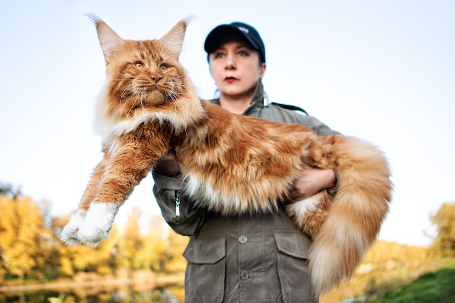
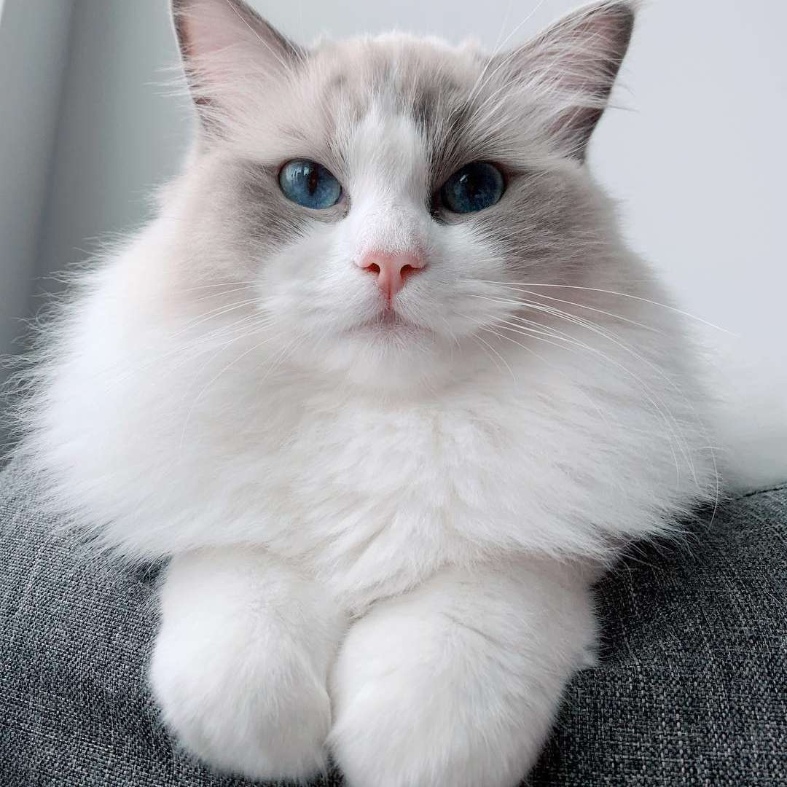
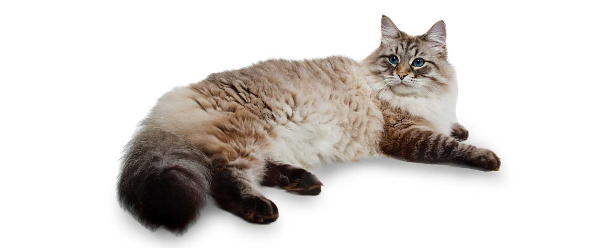
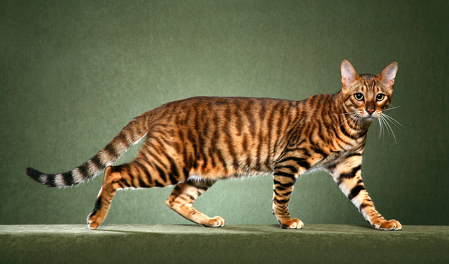
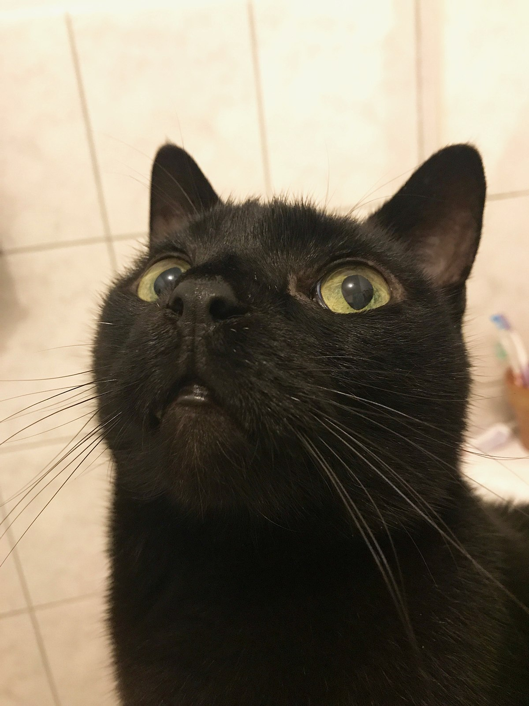

types of cats
1. Maine Coon
Big fluffy cats. What more can you ask for? 10/10
2. Ragdoll
They are cute. Also very fluffy. 10/10
3. Siberian
Very cute cat. They have fluffy coats. Nice coat color scheme too. 10/10
Honorable mentions
I. Toyger
They have a funny name. I like saying this word. They also look kind of like a tiger. 10/10
II. Bombay
It's like a Burmese, but with a darker and slicker coat and slimmer build. Very cute. 10/10
III. Sphynx

Egyptian aesthetic that you may be looking for. I do not like petting these cats becuase it feels like im petting leather. They are still cool. 10/10